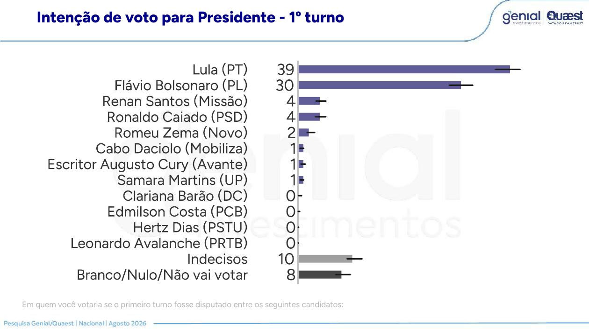
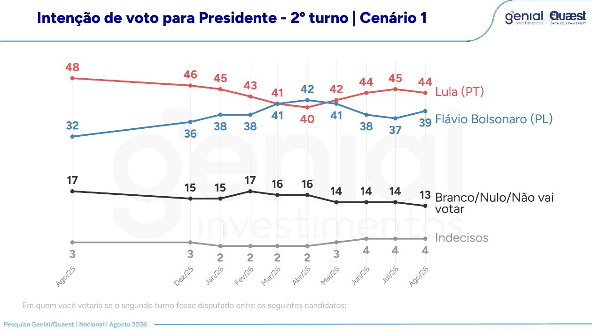

Flávio subiu
De 28% para 30% no primeiro turno e de 37% para 39% no segundo. A rejeição caiu de 57% para 54%. No voto espontâneo, saiu de 14% para 18%.
Quaest nacional · agosto de 2026
O Banco Genial pagou R$ 433 mil por uma pesquisa que mede o menor Flávio entre os institutos próximos. A leitura pública parou no placar. Nas páginas seguintes está a conta que interessa: sete pontos de voto anti-Lula que ainda não são dele, o teste que a própria Quaest fez quatro vezes mostrando que nenhuma terceira via chega perto, e a faixa de renda onde a eleição será decidida. Este dossiê é abertamente favorável a uma leitura: a de que a direita ganha mais lendo esta pesquisa do que xingando ela. O padrão de prova é o mesmo para todo mundo.
01 · veredito
Esta auditoria separa fato publicado, conta nossa e hipótese sem prova. As tabelas do relatório são imagens sem camada de texto: cada número abaixo foi lido página a página e cita a página de origem.
De 28% para 30% no primeiro turno e de 37% para 39% no segundo. A rejeição caiu de 57% para 54%. No voto espontâneo, saiu de 14% para 18%.
Pontos nacionais de desaprovação a Lula que não viram voto em Flávio no segundo turno. A distância a vencer é de 5.
Lula ganha de Flávio por 5, de Caiado por 8, de Renan por 10 e de Zema por 12. Mesma amostra, mesmo dia, mesmos pesos.
O relatório traz 58 das 109 perguntas. Ficaram de fora confiança institucional, ideologia, vice, Senado e voto recordado em 2022.
02 · o vão
Essa diferença de 16 pontos é o objeto inteiro de uma campanha de oposição. Ela não está espalhada por igual: tem endereço, tamanho e um nome para cada recorte. É a conta central deste dossiê.
Contra 41% que dizem que sim. Em julho eram 51% e 45%. Pergunta 44, página 39.
Contra 48% que aprovam. A aprovação está parada desde junho. Página 43.
Contra 44% de Lula. Sobram 17 pontos de branco, nulo e indecisão. Página 20.
Entre quem recusa mais quatro anos de Lula e quem escolhe o adversário no confronto direto.
Maiores vãos: mais de 5 salários mínimos, 58% desaprovam e 44% votam em Flávio, vão de 14 pontos. Ensino superior, 58% e 45%, vão de 13. Sudeste, 52% e 40%, vão de 12. Ensino médio, 53% e 42%, vão de 11. Entre 16 e 34 anos, 48% e 38%, vão de 10. Evangélicos, 57% e 48%, vão de 9.
Barra clara: desaprovação do governo Lula no recorte, páginas 43 a 51. Barra cheia: voto em Flávio no cenário 1 de segundo turno, página 21. O retângulo tracejado é a diferença entre as duas.
As três faixas de renda somam 100% da amostra, então dá para ponderar sem inventar nada: 31% até dois salários com vão de 5, 42% entre dois e cinco com vão de 5, e 27% acima de cinco com vão de 14. Resultado: 7,43 pontos nacionais. A distância a vencer no segundo turno é de 5.
Desaprovar não é estar disponível. Existe eleitor que desaprova o governo e vota em Lula assim mesmo, e existe quem desaprove e não vote em ninguém. O número é teto endereçável dentro de cada recorte, medido com duas tabelas do próprio instituto, não previsão de resultado.
Nos três recortes de renda, o branco, o nulo e a indecisão do segundo turno somam 16, 16 e 20 pontos. Ou seja: o eleitor que desaprova e não vota em Flávio, em geral, também não está votando em Lula. Ele está fora da urna. Isso muda a natureza do problema: não é preciso convencer eleitor de Lula para fechar a conta, é preciso dar destino a quem já saiu.
03 · voto útil
O instituto rodou quatro cenários de segundo turno na mesma amostra, com os mesmos entrevistados, os mesmos pesos e o mesmo dia de campo. É o experimento mais limpo do relatório e o que menos circulou.
Lula 44 contra Flávio 39, diferença de 5. Lula 45 contra Caiado 37, diferença de 8. Lula 45 contra Renan Santos 35, diferença de 10. Lula 46 contra Zema 34, diferença de 12.
Páginas 20, 23, 26 e 29. Branco, nulo e indecisão vão de 17 com Flávio a 20 com Renan e Zema.
Trocar o adversário move o adversário, não o presidente. A faixa de Lula nos quatro cenários é de dois pontos; a do desafiante, de cinco.
A não escolha sobe de 17 para 20 quando Flávio sai da cédula. O voto que ele carrega não migra para outro nome da direita: sai da urna.
É a medição do próprio instituto contratado pelo banco. Qualquer substituição testada em agosto entrega a Lula uma vitória mais folgada.
Flávio é o melhor adversário em 14 dos 19 recortes publicados nos quatro cenários. Vantagem maior no Sul, com 56 contra 46 de Caiado. Perde para Caiado entre quem ganha mais de cinco salários, 44 contra 48, entre homens, 44 contra 46, no Centro-Oeste e Norte, 44 contra 46, e no ensino superior, 45 contra 46.
Páginas 21, 24, 27 e 30. Só entram os recortes em que o relatório imprime o valor dos quatro desafiantes.
Caiado não é um Flávio mais palatável: é outra coalizão. Ele ganha 4 pontos acima de cinco salários mínimos e 2 entre homens, e perde 10 no Sul, 6 entre mulheres e 6 entre brancos. O saldo dessa troca é negativo em 2 pontos no total nacional, e o buraco aparece exatamente onde a direita hoje é maioria.
Existe um recorte em que a terceira via bate Flávio de forma consistente: renda alta e escolaridade superior, onde Caiado faz 48 e 46. É o mesmo lugar em que o vão do capítulo anterior é maior. Esse voto está disponível contra Lula, mas não é naturalmente de Flávio; ele terá de ser conquistado, não herdado.
Dos que declaram voto em Zema, 79% dizem que ainda pode mudar. Só 20% chamam a escolha de definitiva. Página 34.
Pode mudar em 53% dos casos. Entre os eleitores de Flávio, o índice cai para 32%, e o voto definitivo subiu de 62% para 68%.
Renan Santos é desconhecido para 65% do eleitorado, Zema para 49% e Caiado para 44%. Página 36.
Somando os três, 5,5 pontos nacionais de voto que o próprio eleitor classifica como mutável, contra 10 pontos que eles têm no total.
Que a defesa da candidatura única da direita no primeiro turno é sustentada por três medições do instituto e não por preferência: a distância no confronto direto cresce com qualquer substituto, o voto da terceira via é declaradamente mutável por metade dos seus eleitores e dois terços do eleitorado não conhecem o nome que mais cresce nela. O que os dados não permitem é somar 13 pontos de terceira via a Flávio e anunciar 43: a pesquisa não acompanha eleitores entre perguntas, e teto aritmético não é previsão.
04 · o mapa
A Quaest pergunta ao entrevistado em que grupo político ele se encaixa e depois cruza com o voto. O resultado é a planta baixa da eleição: onde cada ponto está guardado, e de quem.
Lulistas são 19% do eleitorado e dão 95% a Lula. Esquerda não lulista, 14%, dá 81%. Independentes são 32%: Lula 24, Flávio 18, terceira via 15, estacionados em branco ou indecisão 38. Direita não bolsonarista, 21%: Flávio 66, terceira via 20, Lula 4. Bolsonaristas, 12%: Flávio 82.
Páginas 18 e 112. Largura proporcional ao tamanho do bloco; altura, à composição do voto dentro dele.
Convertidos para o total nacional. Desses, 5,58 estão dentro dos dois blocos de direita e 6,40 entre independentes.
82% da direita não bolsonarista diz que votaria em Flávio; 66% votam hoje. Entre bolsonaristas, 91% contra 82%.
Indecisos e branco/nulo somados. Só entre independentes são 12,16 pontos nacionais parados.
Recompondo o placar a partir dos blocos: Lula 38,3 contra 39 publicado e Flávio 29,6 contra 30. A diferença é o bloco de 2% que não declara posição.
Dentro da direita não bolsonarista, 20 pontos percentuais votam em Renan, Caiado ou Zema e outros 8 estão em branco ou indecisos. É gente que já se declara de direita, já rejeita Lula por 4% de intenção de voto nele, e ainda assim não está com o candidato do campo. Nenhum outro alvo do mapa combina disposição e distância tão curtas.
Os independentes são o maior bloco, 32%, e o mais hostil: 60% não votariam em Flávio e 62% não votariam em Lula. Ali a disputa não é por preferência, é por comparecimento. Os 12,16 pontos estacionados nesse bloco valem mais para quem conseguir tirá-los da abstenção do que para quem tentar convertê-los.
05 · economia
O bloco econômico da Quaest tem nove perguntas e quase nenhuma virou manchete. Ele descreve um país que se sente mais pobre e um governo que continua com 48% de aprovação. Entender por que essas duas coisas convivem é entender onde o ataque econômico funciona.
E, ao mesmo tempo: aprovação do governo em 48%, melhor avaliação empatada com a pior em 36%, e 46% esperando que a economia melhore nos próximos doze meses, a melhor expectativa desde janeiro. O eleitor separa o passado que sentiu do futuro que espera, e o governo está sendo pago pelo segundo.
Isenção do IRPF: 30% dizem ter sido alcançados, e desses 21% sentiram aumento significativo na renda, o que dá 6,3% do eleitorado. Desenrola 2.0: 10% alcançados, 26% deles com aumento significativo, o que dá 2,6% do eleitorado.
Páginas 68, 69, 74 e 75. Entre os alcançados pela isenção, 46% dizem não ter sentido diferença nenhuma.
É 42% do eleitorado, a maior das três. Aprovação do governo em 46% contra 48% de desaprovação, e segundo turno em 41 contra 43. Nenhuma outra faixa está tão dividida.
É pouco mais de três salários mínimos de 2026: exatamente o miolo dessa faixa. E 68% do eleitorado inteiro diz que a isenção não beneficiou a sua família.
Aprovação de 59% e subindo; entre beneficiários do Bolsa Família, 66%, contra 59% em abril. É a faixa mais atingida pela inflação de alimentos e a mais leal ao governo.
Que o ataque econômico tem endereço estreito e ele não é o mais pobre. Na faixa de até dois salários, a transferência direta compra aprovação mesmo com o supermercado subindo, e a Quaest mostra isso em série: aprovação sobe enquanto o poder de compra cai. Na faixa de dois a cinco salários, onde vive quase metade do eleitorado, não há transferência que sustente: há uma isenção de imposto que 68% dizem não ter sentido e um programa de dívida que chega a 10%. É ali que a distância entre a propaganda e o contracheque é verificável pelo próprio eleitor, e é ali que o segundo turno está em 41 contra 43.
06 · agenda e canal
Duas perguntas quase ignoradas do relatório dizem sobre o que o eleitor pensa e por onde ele fica sabendo. Juntas, explicam parte do bloqueio descrito nos capítulos anteriores.
É a maior preocupação com o Brasil desde o início da série, medida em setembro de 2025. Página 98.
Empatada com saúde. Somada à violência, dá 44% da agenda em temas historicamente favoráveis à direita.
Quinto lugar. O tema que domina a cobertura eleitoral não domina a preocupação declarada do eleitor.
Entre 60 anos ou mais, TV 57% e redes 17%, e Flávio perde por 14. Até dois salários mínimos, TV 41% e redes 31%, Flávio perde por 24. Acima de cinco salários, redes 40% e TV 30%, Flávio ganha por 8. Entre 16 e 34 anos, redes 50% e TV 20%, Flávio perde por 6.
Páginas 100 a 102 para o canal e página 21 para a margem no segundo turno.
Em agosto de 2026, redes sociais e TV empatam em 35% como principal fonte de informação política, pela primeira vez na série da Quaest. A migração é real, mas é desigual: entre 60 anos ou mais, a TV ainda é 57% contra 17%.
Os dois piores recortes de Flávio, mais velhos e mais pobres, são os dois mais dependentes de televisão. O canal em que a direita tem vantagem estrutural é o que menos chega onde ela precisa crescer. Isso é uma restrição de mídia, não de mensagem, e não se resolve com mais conteúdo digital.
07 · quatro quadrantes
Nenhuma linha abaixo é opinião solta: cada uma cita a página da Quaest que a prova. Onde a leitura é desfavorável a Flávio, ela está aqui pelo mesmo motivo que as favoráveis.
De todos os estímulos testados no relatório, um só produz maioria em quatro dos cinco blocos e quase unanimidade nos dois de direita: a proibição de visitas a Jair Bolsonaro é considerada errada por 52% do eleitorado, 83% da direita não bolsonarista, 92% dos bolsonaristas e, decisivamente, por 50% dos independentes contra 39%. Nenhum tema econômico do relatório alcança essa combinação. Já a reunião com embaixadores tem o efeito oposto fora da base: diminui a chance de voto para 26% do eleitorado e para 57% da esquerda não lulista, e só aumenta entre bolsonaristas, 45%. Um tema une, o outro fecha.
08 · o placar
A comparação correta é dentro da mesma série, com o mesmo instituto e método. Junho, julho e agosto formam uma história menos dramática do que uma fotografia isolada, e a série longa é menos favorável do que a onda.
Primeiro turno: Lula 39, 40, 39; Flávio 29, 28, 30. Segundo turno: Lula 44, 45, 44; Flávio 38, 37, 39.
Percentuais sobre o total da amostra. Diferença de julho a agosto: Lula −1 e Flávio +2 nos dois cenários.
Antes de qualquer cédula, 18% citam Flávio e 25% citam Lula. Em julho eram 14% e 26%. A distância espontânea caiu de 12 para 7, mais do que a estimulada. Página 8.
A série de primeiro turno da Quaest marca 32% em fevereiro, 33% em março, 29% em junho, 28% em julho e 30% em agosto. Agosto é recuperação, não recorde. Página 10.
Os indecisos do primeiro turno saíram de 5% em março para 10% em agosto, enquanto branco e nulo caíram de 16% para 8%. O eleitorado não saiu da dúvida: mudou de tipo de dúvida.


09 · o movimento
Cinco indicadores apontam na mesma direção. Isso fortalece a interpretação de recuperação, mas uma única onda ainda não identifica qual evento a causou.
O diferencial emocional também fechou: medo da família Bolsonaro caiu de 46% para 44%, enquanto medo de Lula subiu de 38% para 41%. A vantagem de oito pontos virou três.
Entre bolsonaristas, Flávio foi de 91% para 95% no segundo turno. Não há sinal de erosão do núcleo duro.
O salto de 74% para 81% é o avanço mais relevante para a consolidação agregada do campo da direita.
Aprovação do governo ficou 48% a 47%. Mudou o voto sem mudar essa avaliação. Campanha, notícias e amostragem podem coexistir.
Descritivamente, Michelle melhora como sinal de unidade, sobretudo dentro do campo: 79% dos bolsonaristas e 70% da direita não bolsonarista dizem que a participação dela aumenta as chances, contra 37% dos independentes. A fala sobre embaixador é negativa no saldo geral, e Lula ainda lidera o atributo patriotismo. Perguntas hipotéticas de “aumenta ou diminui” não medem comportamento real nem isolam efeito causal.
10 · estatística
Ela é uma aproximação para cada percentual sob amostragem aleatória simples. A pesquisa, porém, sorteia conglomerados, aplica pesos e usa MRP nos recortes. Para a diferença entre dois candidatos, a incerteza é outra.
| Cenário | n efetivo | 1º turno, vantagem 9 | 2º turno, vantagem 5 |
|---|---|---|---|
| deff 1,0 · aleatória simples | 2.004 | 5,38 a 12,62 | 1,02 a 8,98 |
| deff 1,5 | 1.336 | 4,57 a 13,43 | 0,12 a 9,88 |
| deff 2,0 | 1.002 | 3,89 a 14,11 | −0,63 a 10,63 |
Seria necessário deff 6,18 para o intervalo alcançar zero. Com seis entrevistas por setor, o conglomerado sozinho não consegue produzir isso por uma correlação intraclasse válida.
Deff 1,58 basta para incluir empate. Se viesse apenas dos grupos de seis, equivaleria a correlação intraclasse de 0,116, perfeitamente concebível em atitudes políticas.
11 · geografia social
Os recortes abaixo são descritivos e agregados. Como bases e incerteza dos subgrupos não foram publicadas, diferenças pequenas não devem virar histórias precisas.
| Recorte | Lula | Flávio | Leitura técnica |
|---|---|---|---|
| Sul | 29 | 56 | Maior vantagem regional de Flávio |
| Sudeste | 38 | 40 | Vantagem curta no maior colégio |
| Centro-Oeste + Norte | 40 | 44 | Vantagem curta de Flávio |
| Nordeste | 64 | 25 | Principal déficit territorial |
| 35-59 anos | 42 | 42 | Empate descritivo |
| Mulheres | 47 | 35 | Déficit de 12; entre homens, Flávio +4 |
| Ensino superior | 34 | 45 | Melhor recorte de escolaridade para Flávio |
| Sem Bolsa Família | 39 | 42 | Leve vantagem de Flávio |
Esses dados dizem onde a coalizão é socialmente larga ou estreita. Não identificam pessoas, bairros “persuadíveis” nem mensagens causais. O próprio relatório não fornece bases não ponderadas para testar os recortes.
12 · composição
A auditoria usa o eleitorado residente do TSE para sexo, idade e região, e a PNAD Contínua anual 2025 para renda, filtrada para pessoas de 16 anos ou mais. Diferente de outras rodadas, aqui a reponderação não muda o vencedor em lugar nenhum: ela apenas amplia a vantagem de Lula.
Mulheres: 53% na meta Quaest e 52,819% entre 157,8 milhões de eleitores residentes.
É o maior desvio regional: Sudeste 41% na Quaest contra 42,024% no TSE.
Até dois salários mínimos: 31% na Quaest contra 35,44% na PNAD.
Barras na mesma escala, de 0% a 50%. PNAD anual 2025, primeira visita, peso V1032 e 200 pesos replicados.
Reponderar apenas a margem de renda para a PNAD move a estimativa reconstruída de 39,72 × 30,02 para 40,44 × 29,57. A vantagem de Lula cresceria 1,17 ponto. Publicamos porque o padrão de prova é o mesmo nos dois sentidos.
Ele não “corrige” a pesquisa. A Quaest pondera margens conjuntamente e usa MRP. Sem pesos finais e especificação do modelo, esta é apenas uma sensibilidade de uma margem.
O corte etário já estava correto no cálculo publicado: V2009__idade_na_data_de_referencia >= 16. Sem o filtro, a faixa mais pobre seria 37,05%; com ele, 35,44%; excluindo também quem tem exatamente 16 anos, 35,35%, o que seria incorreto porque a pesquisa inclui eleitores de 16 anos. Reprocessamento sobre 408.243 linhas válidas, das quais 323.023 no universo de 16 anos ou mais.
13 · território
Comparamos os anexos de julho e agosto pelo código IBGE de 15 dígitos. Nome de bairro não é unidade amostral; um bairro contém muitos setores diferentes.
As duas ondas alocaram exatamente 141 setores no Sudeste, 92 no Nordeste, 48 no Sul, 28 no Norte e 25 no Centro-Oeste.
O Jaccard municipal foi 10,09%. São Paulo manteve 22 setores e o Rio 12, mas nenhum setor exato foi repetido.
Os 334 códigos de agosto foram consultados no Panorama. População setorial: mediana 568; mínimo 98; máximo 2.258.
O anexo informa onde houve entrevista, não o voto, o peso ou a probabilidade de inclusão de cada setor. Portanto, trocar bairros pode contribuir para variação, mas não permite atribuir os três pontos de redução da distância ao mapa.
Arquivos reprodutíveis: auditoria territorial JSON e base consolidada do dossiê.
14 · instrumento
O tamanho não invalida automaticamente uma entrevista presencial. Mas ele torna duração real, pulos, posição da pergunta e efeito de entrevistador parte central da prova de qualidade.
Inclui matrizes com 12 candidatos e 16 instituições.
Reduzem carga de memória, mas podem gerar efeitos visuais e de ordem.
25 “TRAZER ITEM AQUI” e 3 “TRAZER OPÇÃO AQUI”.
É a média bruta se todos os 109 coubessem em 20 minutos.
O PDF tem 6.447 palavras. Como filtros e instruções nem sempre são lidos, o teste simula três frações, a 130 palavras por minuto. Isto não mede a duração observada.
Intenção espontânea vem antes da lista; há cartões e cédula circular; o voto é perguntado cedo; início e fim são gravados automaticamente; o campo incluiu sexta, sábado, domingo e segunda.
Conhecimento e rejeição de 12 nomes aparecem antes do voto estimulado e podem ativar nomes e avaliações. Duração, tentativas, recusas, substituições, straightlining e efeitos por entrevistador não foram publicados.
| Evidência | Achado | Aplicação honesta à Quaest |
|---|---|---|
| Jeong et al. | Em entrevistas presenciais de duas a três horas, uma hora adicional elevou omissões em 10% a 64%, conforme o módulo. | Prova que fadiga causa dano; não autoriza importar essa magnitude para 20 minutos. |
| Galesic e Bosnjak | Itens tardios receberam respostas mais rápidas, curtas e uniformes; duração prometida também afetou participação. | A posição Q83–Q102 torna confiança e ideologia particularmente dependentes de paradata. |
| Experimento ESS | Questionários de 35 e 50 minutos tiveram qualidade em geral comparável. | Contraponto essencial: comprimento é fator de risco, não sentença de invalidez. |
| 29 mil ICCs | Efeitos de entrevistador foram maiores em atitudes, itens tardios e perguntas com cartões. | O bloco de confiança combina os três fatores e exigiria variância por entrevistador. |
| AAPOR e Pew | Ordem, contexto, primazia e recência alteram respostas; rotação ajuda. | A cédula circular é boa prática. Q9–Q20 pode preparar Q21; blocos posteriores não causam o voto perguntado antes. |
| ESS, protocolo de contato | Tentativas devem variar e incluir noite e fim de semana. | Sábado e domingo ajudam, mas horário, tentativas e substituições continuam desconhecidos. |
15 · edição
Cobertura de 53,2%. Em julho, o primeiro relatório trouxe 65 de 101 e o suplemento elevou o total a 73. A lacuna de agosto é maior, e o que ficou de fora é estrategicamente decisivo.
Não significa manipulação. Significa que seleção editorial é uma variável observável e precisa ser explicitada.
O bloco inteiro sobre pessoas e instituições ficou fora da apresentação.
Voto recordado em 2022 e comparecimento declarado em 2024 poderiam diagnosticar viés.
Q1,5,7OperacionaisElegibilidade, ocupação e consentimento de gravação.
Q29–30Resultado desejado e vencedor esperadoQuem o eleitor quer que vença e quem acredita que vencerá. É a medida direta do voto útil, e ficou de fora.
Q31–43Religião, vice, Senado e decisãoTreze itens eleitorais, inclusive cinco nomes para vice.
Q61–68*Estados Unidos e apoio de TrumpQ61, 62, 63, 65, 66 e 68: favorabilidade, alinhamento, endosso, dano e reação ao tarifaço.
Q70–73Milei e vídeo de Jair por IAConhecimento e efeito de endosso, além de vídeo artificial.
Q78,82Conflito e reconciliaçãoO relatório mostra as pazes entre Michelle e Flávio, mas omite conflito e efeito no voto.
Q83–98ConfiançaMatriz completa com 16 instituições e pessoas.
Q100–102Ideologia e afetosAutoposição esquerda-centro-direita, PT e Jair Bolsonaro.
Q108–109ValidaçãoVoto recordado em 2022 e comparecimento declarado em 2024.
Voto recordado não prova representatividade, pois memória e vergonha social distorcem respostas. Mesmo assim, comparar a amostra ponderada com o resultado oficial de 2022 revelaria se ela reconstrói o passado de modo plausível. A pergunta existe; o resultado não.
As perguntas retidas incluem justamente as que respondem à disputa interna da direita: quem o eleitor quer que vença, quem ele espera que vença, quem deveria ser vice e quanto pesa o endosso de Trump. Não há prova de que a seleção tenha sido feita depois de ver os números. Há um remédio simples que encerraria a dúvida: plano de análise datado antes do campo.
16 · dinheiro e edição
A nota fiscal evita insinuação preguiçosa. O risco auditável é outro: quem financia e publica escolhe quais respostas chegam primeiro ao debate.
NFS-e 511, emitida em 29/07 às 17h15, parcela única da pesquisa nacional de agosto.
Contratante CNPJ 45.246.410/0001-55; prestador Quaest CNPJ 22.445.600/0001-04.
Nenhum documento visto demonstra compra de número, alteração de peso ou veto explícito a resultado.
Qual protocolo definiu antes do campo o relatório principal, os suplementos e a ordem de divulgação? Sem plano de análise datado, 51 resultados retidos deixam aberta a seleção pós-resultado, ainda que tudo tenha sido medido corretamente.
17 · outros institutos
Quaest e Nexus foram a campo no mesmo fim de semana e discordam bastante sobre a distância. Datafolha e Atlas são anteriores. Percentuais brutos não são comparáveis sem olhar branco, nulo e indecisão.
| Instituto | Modo | Bruto | Não escolha | Válidos |
|---|---|---|---|---|
| Quaest | Presencial domiciliar | 39 × 30 | 18% | 47,56 × 36,59 |
| Nexus/BTG | Telefone, RDD | 41 × 37 | 7% | 44,09 × 39,78 |
| Datafolha | Pontos de fluxo | 40 × 32 | 11% | 44,94 × 35,96 |
| Atlas/Bloomberg | Recrutamento digital | 44,9 × 35,8 | 1,6% | 45,63 × 36,38 |
Lula lidera o primeiro turno em todas. Nos válidos, Datafolha e Atlas quase coincidem para os dois principais candidatos. A direção é mais estável que o nível bruto.
Nexus mede 41 × 37 no primeiro turno e 46 × 45 no segundo, quase simultânea à Quaest. Modo de entrevista, oferta de respostas, seleção e ponderação são candidatos plausíveis para a diferença.
18 · diagnóstico final
A conclusão mais forte não é uma acusação. É uma lista curta de provas que o instituto possui e o público ainda não.
Registro tempestivo, questionário, nota fiscal, anexo territorial, controle declarado de áudio e geolocalização, rotação forte de setores e metas demográficas próximas ao TSE. E, ao contrário de quase todo mundo, quatro cenários de segundo turno na mesma amostra, o que permite medir a substituição em vez de especular sobre ela.
Pesos finais, n efetivo, deff, bases brutas, equação do MRP, paradata e 51 resultados não estão públicos. A margem divulgada pressupõe um desenho que não é o utilizado.
Primeiro: a distância do primeiro turno é estatisticamente clara e desfavorável; a do segundo já não sustenta certeza sem conhecer o desenho. Segundo: existe uma maioria que recusa mais quatro anos de Lula e ela não é de Flávio, com 7,43 pontos nacionais parados fora da urna. Terceiro: a própria Quaest mostra que qualquer substituto testado perde por mais, e que metade do voto da terceira via é declaradamente mutável. Quarto: o argumento econômico tem endereço estreito, a faixa de dois a cinco salários mínimos, e é lá que a isenção do IRPF prometeu e 68% dizem não ter recebido. Quinto: a pauta que une os dois blocos de direita e ainda ganha entre independentes é a proibição de visitas a Jair, com 52% do eleitorado contra a decisão.
Lula recupera exatamente onde Flávio precisa crescer: evangélicos, Nordeste e Bolsa Família. A expectativa econômica virou para melhor. O teto de Flávio na série é de março, não de agosto. Rejeição de 54% continua sendo maioria e o muro feminino de 16 pontos não se moveu. Uma campanha que só leia o capítulo 03 deste dossiê vai perder por esses quatro motivos.
19 · fontes e método
Fontes locais foram preservadas em data/pesquisas/quaest/2026-08/. Cálculos e transcrições consolidados estão no JSON público e no script de auditoria.
O relatório de 114 páginas não tem camada de texto nos gráficos: cada tabela é uma imagem. Todas as séries, recortes e cenários citados aqui foram lidos página a página e gravados em scripts/quaest-august-audit.py, com a página de origem ao lado de cada bloco. O controle de qualidade da transcrição é a recomposição do placar a partir do cruzamento por posicionamento: 38,3 contra 39 publicado para Lula e 29,6 contra 30 para Flávio, com resíduo igual ao bloco de 2% que não declara posição.
Cálculos: Arvor Intelligence. Percentuais podem não somar 100 por arredondamento. Comparações de subgrupos são descritivas, pois a Quaest não publicou bases não ponderadas nem intervalos. O teste de renda é uma sensibilidade marginal, não reestimativa do modelo conjunto. A leitura estratégica deste dossiê é declaradamente favorável a uma interpretação; os números que a contrariam estão publicados nos mesmos capítulos, com a mesma régua.